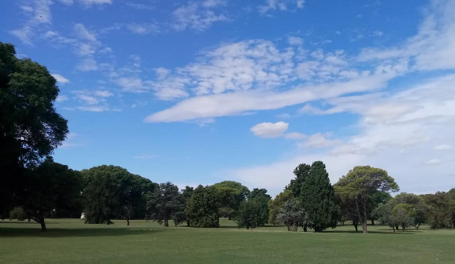

18 Hoyos | Par 72 | 6.850 Yardas — Explorá el campo de juego hoyo por hoyo.

★ Salida Principal · Par 4 · 410 YdsUn Dogleg suave a la derecha. Exige una salida precisa desde el tee para evitar el hazard lateral de agua ubicado a la izquierda del fairway.
Par 3 muy técnico con un green protegido frontalmente por un bunker profundo de arena blanca y viento constante cruzado.
Permite tiros potentes desde el tee, pero requiere suma atención en el segundo golpe debido a la arboleda densa en los laterales.
Hoyo recto de distancia media con un green complejo de múltiples pendientes pronunciadas que pondrán a prueba tu lectura de putt.
Expuesto a los vientos más fuertes del predio. Mantener la bola en la línea central del fairway es fundamental para tener un buen approach.
Hoyo corto pero de gran precisión. Un tiro certero a la plataforma superior del green te dejará una clara oportunidad de birdie.
El hoyo más largo del circuito. Premia a los pegadores potentes, pero castiga severamente con fuera de límite a quienes arriesgan de más.
Fairway ancho que invita a arriesgar con el driver para intentar dejar un tiro corto y accesible hacia la bandera.
Cierre de la primera mitad frente al Club House. Green amplio pero rodeado estratégicamente por tres trampas de arena.
Comienzo de la vuelta. Exige un tiro de salida colocado con precisión sobre el centro-izquierda del fairway.
Requiere un hierro largo o madera de calle. El viento suele soplar en contra en este tramo del recorrido.
Llegable en dos golpes para pegadores largos, pero bordeado por una cañada a la derecha que penaliza los desvíos.
Un corredor rodeado de pinos centenarios donde la precisión desde el tee de salida importa mucho más que la distancia.
El Par 4 más largo y exigente del campo. Exige dos golpes impecables para lograr alcanzar el green en regulación.
Green protegido casi en su totalidad por trampas de arena y agua. Un error de cálculo de distancia se paga con penalidad.
Permite el corte de esquina por encima de los árboles para pegadores audaces, u optar por la vía conservadora hacia la derecha.
Par 5 en suave subida. El tercer golpe a green debe volar obligatoriamente sobre un amplio bunker de recepción.
Cierre espectacular apuntando hacia el Main House. Un green multinivel con tribuna lateral para espectadores.